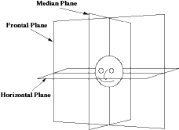
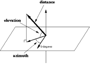
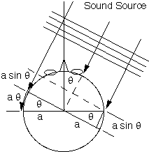
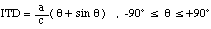
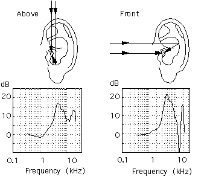

4.2. SISTEMAS DE COORDENADAS
Para especificar la localización de un sonido, necesitamos un sistema de coordenadas. Una elección natural es un sistema centrado en la cabeza. Los tres ejes coordinados definen tres planos: x-y (plano horizontal), x-z (plano frontal) y y-z (plano mediano), definiendo arriba/abajo, delante/atrás y derecha/izquierda respectivamente. Debido a la forma esférica de la cabeza, se utilizan coordenadas esféricas, que incluyen azimut, elevación y radio. A continuación, definimos dos sistemas de coordenadas empleados:
“Vertical-polar coordinate system”: En este sistema, se mide el azimut como el ángulo desde el plano mediano al plano vertical que contiene la fuente y el plano z, y luego se mide la elevación desde el plano horizontal. Las superficies con azimut constante son planos que pasan a través del eje z, y las superficies con elevación constante son conos concéntricos alrededor del eje z.
“Interaural-polar coordinate system”: Primero se mide la elevación como el ángulo que va desde el plano horizontal hasta un plano que contiene el eje x y la fuente. Las superficies de elevación constante son planos alrededor del plano interaural (x), y las superficies con azimut constante son conos concéntricos con el eje interaural.
Usos:
- El “vertical-polar system” es conveniente para describir fuentes en el plano horizontal, cuando el azimut varía entre (-180º, +180º).
- En el “interaural-polar system”, el azimut está entre -90 y +90. La distinción entre adelante y atrás es 0 para superficies en el plano horizontal y 180 para superficies en la parte de atrás.


A. AZIMUT (ILD, ITD)
Uno de los pioneros en investigar la audición espacial fue Lord Rayleigh, quien desarrolló la teoría dúplex (“Dúplex Theory”). Esta teoría define ITD y ILD.

El sonido se propaga a 343 m/s. Si una onda llega a una superficie esférica con un ángulo azimut de tita, el sonido llega primero a la oreja derecha que a la izquierda, ya que tiene que recorrer una distancia mayor. Si dividimos la distancia por la velocidad del sonido, obtenemos la fórmula:

ITD es cero cuando la fuente está directamente enfrente y tiene un máximo cuando la fuente está a un lado, representando una diferencia de 0.7 ms para un tamaño típico de cabeza. También se observó que una onda incidente se difracta en la cabeza, lo que introduce otra diferencia de nivel de señal en ambos oídos, conocida como ILD.
La teoría dúplex sostiene que ILD y ITD son complementarios. A bajas frecuencias (1.5 kHz) hay poco ILD, pero el ITD es apreciable. A altas frecuencias, hay ambigüedad en el ITD, pero el ILD resuelve esta ambigüedad.
B. ELEVACIÓN (HTRF)
El pabellón auditivo actúa como una cavidad de resonancia, amplificando ciertas frecuencias y generando efectos de interferencia que atenúan otras. Su respuesta en frecuencia depende de la dirección de la fuente de sonido.

C. RADIODISTANCIA
En realidad, somos malos para determinar la distancia de un sonido. Existen ciertos parámetros a considerar:
- Loudness: Intensidad de sonido.
- Motion parallax: Movimientos de la cabeza que cambian los parámetros azimut.
- Excess interaural level difference (ITLD): Exceso de diferencia de los tiempos interaurales.
- Relación entre el sonido directo y el reverberado.
Así mismo, para fuentes cercanas, el ILD aumentará. Este incremento es notable cuando la fuente está a una distancia de un metro. Un caso extremo es cuando un insecto nos ronda la cabeza, o cuando alguien nos susurra al oído. Normalmente, que oigamos un sonido sólo en un oído es muy desagradable. Esto hay que tenerlo en cuenta, pues si queremos simular que el sonido proviene de un lado, no hace falta que solo se oiga de ese lado, sino que se puede escuchar en el otro, siendo así más agradable y más real.
Otra característica que nuestro oído utiliza para localizar los sonidos es la razón de reverberación con la fuente del sonido directo. Esto tiene que ver con las reflexiones del sonido en las paredes de una habitación. Normalmente, la intensidad del sonido cae con el cuadrado de la distancia, pero cuando existen reverberaciones, las cosas cambian. A distancias cortas, la reverberación es bastante grande, mientras que a distancias largas este ratio es más pequeño.